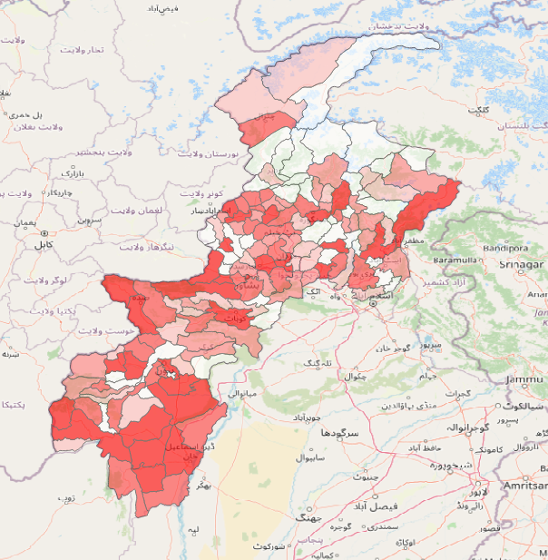
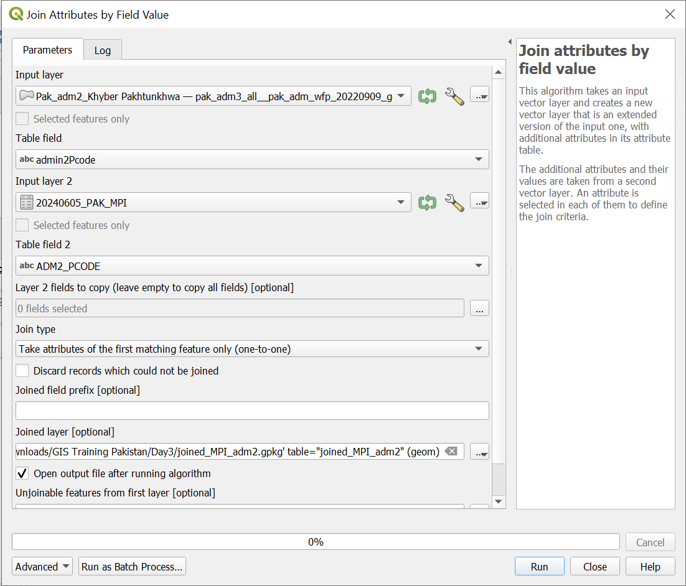
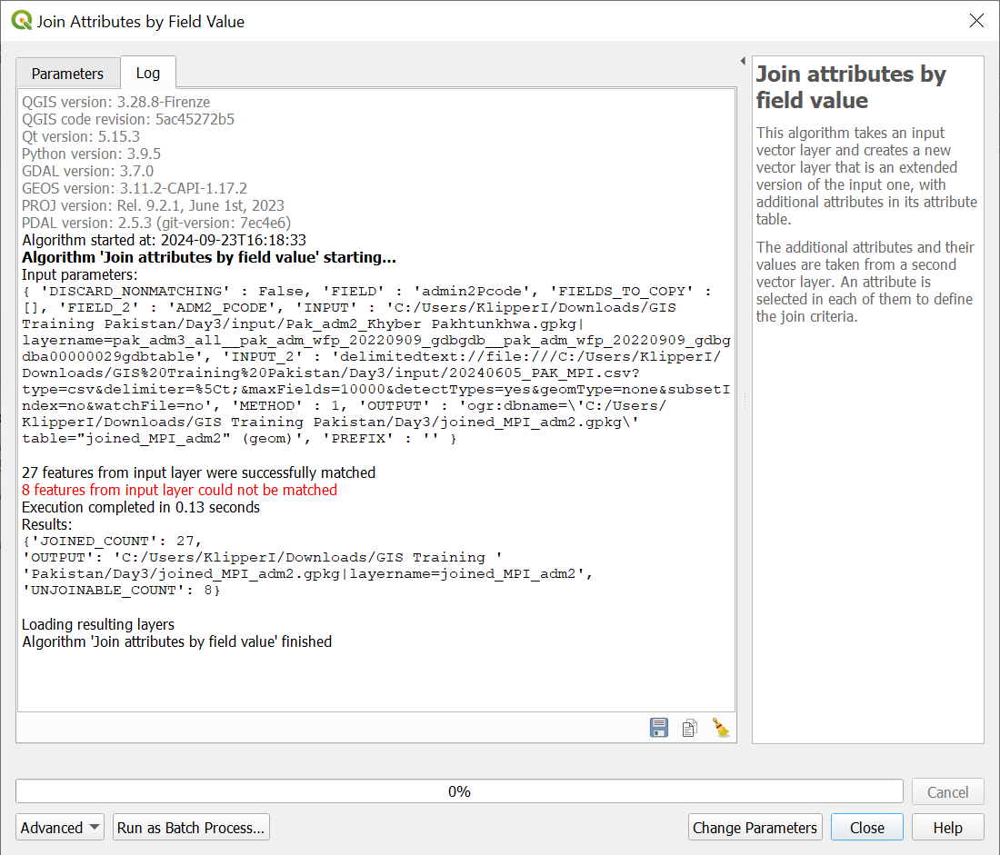

Exercise: Security Peshawar#
Aim of the exercise:
Type of trainings exercise:
This exercise can be used in online and presence training.
These skills are relevant for
QGIS Essentials
Working with multiple layers
Conduct spatial queries
Creation of geodata
Estimated time demand for the exercise.
The exercise takes around 3 hours to complete, depending on the number of participants and their familiarity with computer systems.
Relevant wiki articles
Instructions for the trainers#
Trainers Corner
Prepare the training
Take the time to familiarise yourself with the exercise and the provided material.
Prepare a white-board. It can be either a physical whiteboard, a flip-chart, or a digital whiteboard (e.g. Miro board) where the participants can add their findings and questions.
Before starting the exercise, make sure everybody has installed QGIS and has downloaded and unzipped the data folder.
Check out How to do trainings? for some general tips on training conduction
Conduct the training
Introduction:
Introduce the idea and aim of the exercise.
Provide the download link and make sure everybody has unzipped the folder before beginning the tasks.
Follow-along:
Show and explain each step yourself at least twice and slow enough so everybody can see what you are doing, and follow along in their own QGIS-project.
Make sure that everybody is following along and doing the steps themselves by periodically asking if anybody needs help or if everybody is still following.
Be open and patient to every question or problem that might come up. Your participants are essentially multitasking by paying attention to your instructions and orienting themselves in their own QGIS-project.
Wrap up:
Leave time for any issues or questions concerning the tasks at the end of the exercise.
Leave some time for open questions.
Available Data#
Download all datasets here and save the folder on your computer and unzip the file.
Dataset name |
Original title |
Publisher |
Download from |
|---|---|---|---|
2024-01-01-2024-09-23-Pakistan.xlsx |
Conflict data for Pakistan 01/2024-09/2024 |
ACLAD |
HDX |
PAK_KP_admin_3.gpkg |
Administrative Boundaries level 3 of KP |
UN OCHA |
HDX |
Pak_adm2_Khyber Pakhtunkhwa.gpkg |
Administrative Boundaries level 1 of KP |
UN OCHA |
HDX |
20240605_PAK_MPI.xlsx |
Pakistan Multi Poverty Index (MPI) |
Pakistan Bureau of Statistics |
Pakistan Bureau of Statistics |
AOI_Peshawar.gpkg |
Area of Interest (AOI) around Peshawar |
Task 1: Geolocate security-related information of the last days#
In response to a recent cholera outbreak in Khyber Pakhtunkhwa (KP), the Pakistan Red Crescent Society (PRCS) and other Partner National Societies (PNS) have mobilized a team to this region. The primary objective of the team is to conduct a comprehensive assessment on the ground and facilitate coordination for any necessary future responses. The team will be staying at the “Roomy Crossroad Hotel Peshawar” during their mission in the affected area.
We will use the plugin in “Quick Map Service” to locate places precisely. To install the plugin click on
Plugins->Manage and Install Plugins…->Alland search forQuick Map Service. Once you have found it, click on it and clickInstall Plugin(Wiki Video).Open the plugin by clicking on
Web->Quick Map Service->ESRI->ESRI Satellite. Now you should have a Settelite image base map in yourLayer Panel.Add the
Google Roadbase map from theQuick Map Serviceas well (see wiki).Place the
Google Roadabove the satellite image map and turn the layer transparent by opening the layer properties and navigating to the Transparency tab and adjusting the global opacity.You will need the plugin “Lat Lon tools” to locate the coordinates you receive from the field. To install the plugin click on
Plugins->Manage and Install Plugins…->Alland search forLat Lon tools. Once you have found it, click on it and clickInstall Plugin(Wiki Video).
Now you have all the information you need to start digitizing the known incidents and related areas of interest (as polygons). To find the locations, check the information from the field below and capture it. Use Google in your browser, the base maps and the Lat Lon tools plugin to locate the exact positions.
Warning
When creating the point and polygon layer use the CRS UTM 42 N EPSG: 32642
In case the information states an exact area, create a new polygon layer and map it exactly.
Number |
Description |
|---|---|
1 |
A bomb threat including Improvised Explosive Devices (IED) on the road N45 right between Seri-Bahlol and Tableeghi Markaz Mardina near Jandy has been reported by local radio stations. Please mark the area between the communities along the road as no-go areas. |
2 |
In a conversation with a PRCS driver, a local teacher shared that the vicinity of the Government Girls Primary School in Takkar is notorious for being a minefield. Specifically, the fields between the school and the Noormuhmmad hospital are known to be heavily mined. Due to this danger, local farmers are extremely reluctant to work on this particular piece of land. |
3 |
Following the recent events, it has been decided that the vicinity surrounding the Arbab Niaz Cricket Stadium Peshawar is now designated as a no-go area for all staff members. This area encompasses the region bordered by the N5 road to the south, the Afghan Colony road to the north and east, and the Charsadda Road to the west. |
4 |
GPS Coordinates: (33.99519949518549, 71.66217873936723). A humanitarian worker was transporting medical supplies through the region when they were approached by a local farmer. The farmer mentioned that a nearby abandoned well, located at these coordinates, has become a gathering point for unexploded ordnance. Due to its proximity to a residential area, this site is now flagged as high-risk and needs immediate attention from demining teams. |
5 |
GPS Coordinagtes: (34.02878398623702, 71.43081737211224). A health unit here has recently been vacated after a bomb threat was called in. Police and bomb squads searched the premises but didn’t find any explosives. However, local business owners reported unusual activity around the building in the weeks leading up to the threat. This location is now under surveillance. The area between the health unit and the river, as well as the parks and playground behind it, need to be marked as a temporary no-go zone. |
6 |
Qissa Khwani Bazaar, Peshawar: A popular historical market at this address has become a focal point for local community gatherings, but recent intelligence reports suggest that the site could be at risk for political protests that have turned violent in the past. Authorities are now considering setting up temporary barriers to manage the flow of people, and it’s crucial that this location is marked as a high-risk area for potential crowd control measures. |
The current SOP states that the sides of recent violent incidents are to be avoided in a 1 km radius. To reflect this on the map, we will use the buffer tool.
Create a
 buffer around the points of violent incidents with a distance of
buffer around the points of violent incidents with a distance of 2.000 meters. See the Wiki entry on Geoprocessing for further information.Next, merge the no-go areas polygon layer and the buffer point layer. Use the tool
Merge vector layer.Clip the newly created polygon out of the AOI to create a “Green” area in which the team are allowed to travel. Use the tool
Symmetrical difference.
Task 2: Load Excel File containing conflict data into QGIS#
Drag and Drop the ACLED conflict excel table ‘2024-01-01-2024-09-23-Pakistan.xlsx’ into your QGIS project
Navigate in the Processing Toolbox to the Tool ‘Create points layer from table’.
Choose as ‘X Field’ “longitude” and as ‘Y Field’ “latitude”.
Under ‘Points from Table’ , click on the three dots, choose ‘Save to GeoPackage’ and navigate to you temp folder. Save the layer with the name “Pak_Conflict_points_2024”.

Create points from table#
Get number of events per thesil
Load the “KP admin 3” layer.
We are now interested to know the number of conflict incidents per thesil. For this:
Go to the Processing Toolbox and search for the Tool ‘Count points in polygon’. Choose ‘KP_adm3’ layer as Polygon input and the ‘Pak_Conflict_points_2024’ layer as Points input
Under
Countsave your new layer under “Pak_num_events_adm3”.

Count points from polygon#
Open the attribute of your ‘Pak_num_events_adm3’ layer and scroll to the right. You will find a column with the name “NUMPOINTS”. Here you find the number of events per thesil.
Right-click on the layer and navigate to ‘Properties’ –> ‘Symbology’. On the top change Single Symbol to “Graduated”.
In the ‘Value’ field choose “NUMPOINTS”.
Then below click on “Classify”
You can adjust the Mode and the number of classes if wanted. Also you can choose your preferred color ramp.You can play around a bit here.
Click ‘Apply’ and then ‘OK’
Your result could look similar to this.
{kind=link}

Number of conflict events per thesil#
Task 3: MPI data#
Open the excel file and export it as CSV UTF-8:
Click on
File->Save AsChosse an output folder, where it will be saved (the
data>tempfolder is recommended here) and give the file a meaningful name, for instance 20240605_PAK_MPI.Choose the option CSV UTF-8 (Comma delimited) (*.csv) and
Save

Convert Excel to CSV#
Open QGIS and create a new project. Save the project in your project folder.
Add the 20240605_PAK_MPI.csv file to QGIS by:
Click on the
Layertab ->Add Layer>Add Delimited TextBrowse for your 20240605_PAK_MPI.csv file.
Choose the correct
File Fromat:Custom delimters->SemicolonGo to the tab
Geometry Definitionand chooseNo geometry. We don’t have a column with coordinates or geoemtry information, but only the admin2 name and P-Code.Add layer and close the window.

Load CSV file to QGIS#
To visualize the data now on the map we have to link it to existing geometries and district boundaries. To do that:
Open the attribute table of the attribute table and detect the column which contains the information you want to use to join the data with the location. E.g. City name, district name, or best the P-Code. In our case it is
ADM2_PCODE.Hint: Each administrative level and area contains a worldwide unique code number. This helps to determine the exact administrative boundary without misspelling the name of the area.
We now need an admin layer with an column containing the exact same information as the column of our CSV file. This is needed to link the information provided in the CSV to the district areas.
Load the layer Pak_adm2_Khyber Pakhtunkhwa.gpkg via drag and drop to QGIS.
To link the two layers, open the Toolbox and search for the tool Join attributes by field value. Open it.
Input layer: Pak_adm2_Khyber Pakhtunkhwa.gpkgTable field: admin2PcodeInput layer 2: 20240605_PAK_MPI.csvTable field 2: ADM2_PCOCDEChoose a location to save the file as GeoPackachge and give it a meaningful name, for instance MPI_Admin2_joined.gpkg
Runand close.

Join the districts with the MPI data#
Info: You can see that not all areas are visible. Since we don’t have data for all districts, only the districts were linked with the csv on which we have MPI data.

Information of not joined and linked data#
Visualize MPI_Admin2_joined.gpkg file: We have a new file, showing the district boundaries, but having the MPI information in the attribute table. The MPI value per district we now want to visualize.
Open the
Symbologywindow of the file MPI_Admin2_joined.gpkg.Decide which column you want to visualize. For instance the values of the year 2014 in the column A_2014_15.
Choose
Graduatevisualization.Choose
ValueA_2014_15.Click
Classify.Choose Mode
Pretty Breaks.Click okay and close the window.
Visualize Pak_adm2_Khyber Pakhtunkhwa.gpkg layer for districts we don’t have MPI data on.
Open the
Symbologywindow of the file Pak_adm2_Khyber Pakhtunkhwa.gpkg.Change the color, maybe to dark grey, so we can differentiate between the districts we have and don’t have MPI data for.
Add OpenStreetMap as a baselayer for better orientation.
{kind=link}
{kind=link}

Visualized MPI data on district level#